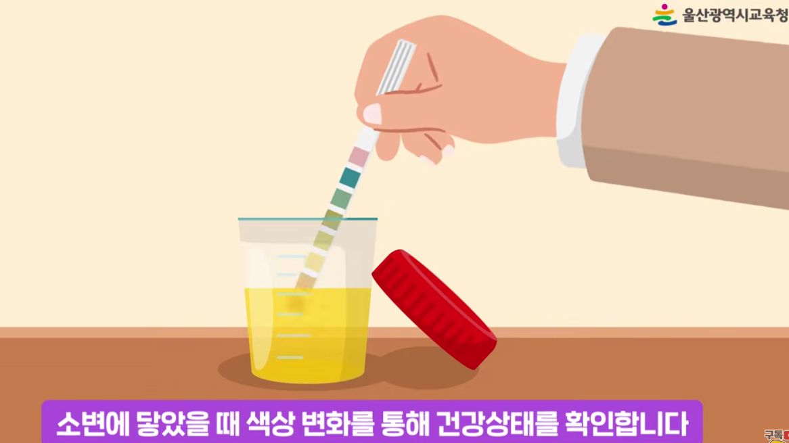
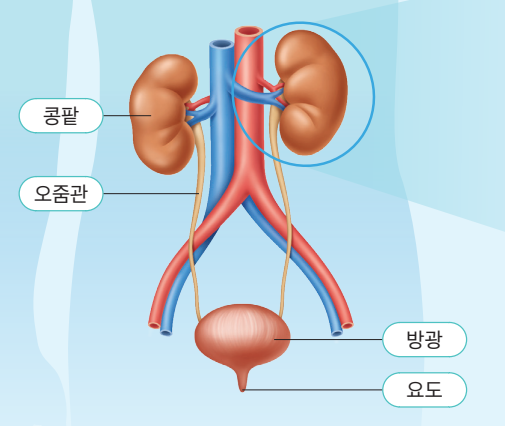
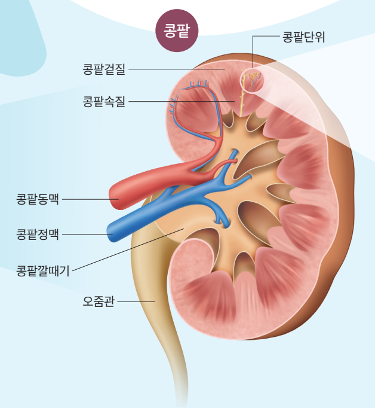
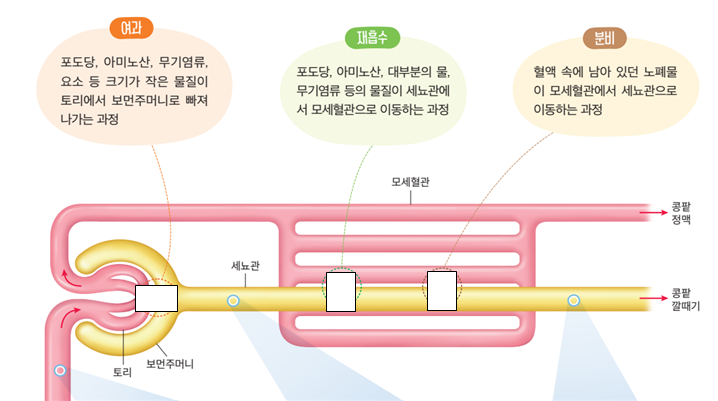
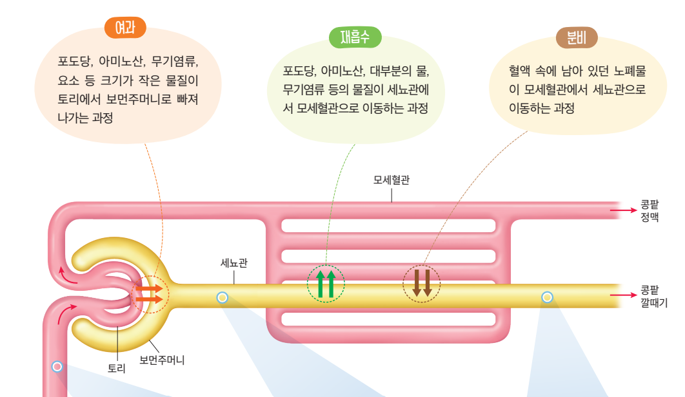
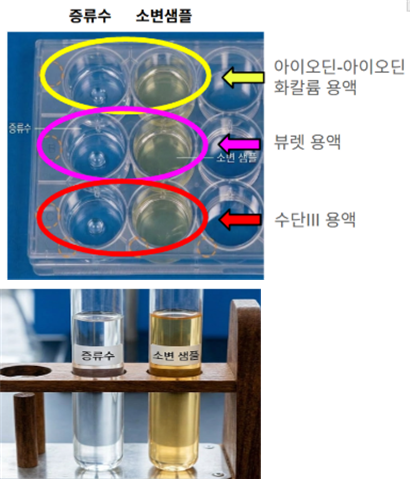

소변검사로 알아보는 환자의 상태

💬 건강검진에서 소변검사를
해 본 적 있나요?
소변에는 몸속 상태가
드러난다! 🔍
여기서 잠깐 멈춰요!
병원에 환자 A, B, C, D가 찾아와 소변검사를 받았어요.
환자 1명의 소변 샘플을 골라 직접 분석해 봅시다.
오줌의 생성 과정(여과·재흡수·분비)을 설명할 수 있다.
영양소 검출 반응을 이용하여 선택한 환자의 모의 소변을 스스로 분석하고, 결과를 정확하게 기록할 수 있다.

🫘 콩팥 혈액 속 노폐물을 걸러 오줌을 만든다
〰️ 오줌관 오줌이 방광으로 이동하는 통로
🎈 방광 오줌을 모아 두는 주머니
🚪 요도 오줌이 몸 밖으로 나가는 통로



혈액 속 포도당은 토리에서 여과될까?
그런데 왜 소변에는 없을까?
혈액 속 단백질은 어떨까?
여과 · 재흡수 · 분비 중 어느 과정과 관련 있을까?
나의 생각을 활동지에 적어 보세요.
🧪 오늘 사용할 시약은 4가지예요.
🔥 가열해야 해요!

| 아이오딘-아이오딘화 칼륨 용액 | 베네딕트 용액 | 뷰렛 용액 | 수단 Ⅲ 용액 | |
|---|---|---|---|---|
| 💧 증류수 (대조군) | ______ ( ) | ______ ( ) | ______ ( ) | ______ ( ) |
| 🧪 샘플 ( ) | ______ ( ) | ______ ( ) | ______ ( ) | ______ ( ) |
빈칸에 관찰한 색을 쓰고, ( )에 검출되면 +, 검출되지 않으면 − 를 표시해요.
갈증,
다리 부종
심한 갈증,
잦은 소변
부종, 피로,
소변량 감소
눈·다리 부종
증상 카드와 모둠원의 결과 카드를 함께 보면
무엇을 알 수 있을까요?
"나라면 환자부터
응급실로 보낸다!"
+ 그렇게 판단한 과학적 근거 쓰기 · 토의 내용은 참고하되 보고서는 혼자 작성
검출 결과(색 변화, +/−)를 정확하게 제시했는가?
오줌 생성 과정(여과·재흡수)과 연결하여 설명했는가?
검출 결과와 증상을 근거로 응급도를 판단했는가?
자신의 판단을 논리적으로 표현했는가?